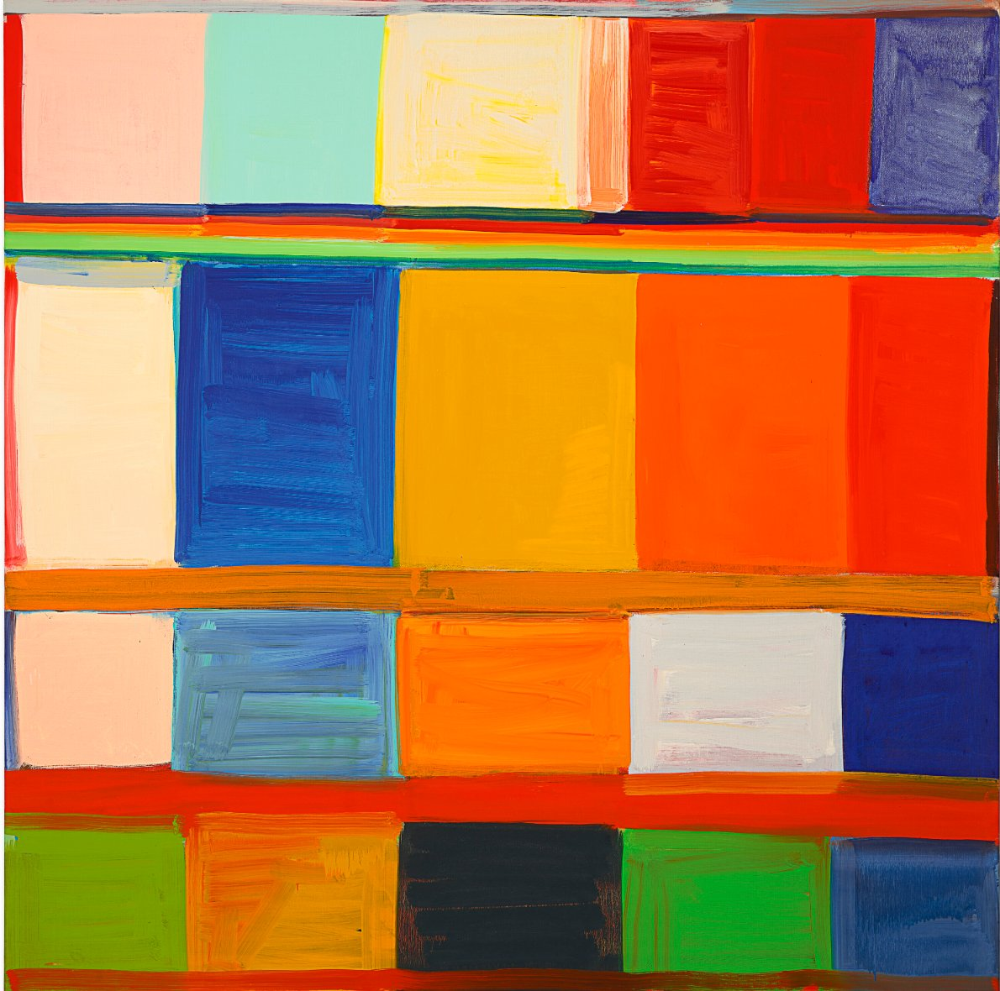

The Firm
Cambridge Collective is a private art advisory firm serving collectors, family offices, and institutions seeking access to works that do not appear on the public market

Our Story
Cambridge Collective was established with a single mandate: to provide genuine off-market access to the world's most significant artworks with price transparency
The private art market operates largely outside public view. The works that matter most change hands through relationships built over years. Cambridge Collective has built those relationships.
Every engagement is individual. We do not operate a public inventory, a gallery, or a retail service. When a collector collaborates with us, we work on their mandate alone.
Our coverage spans from the Northern European masters of the seventeenth century through French Impressionism and into the Post-War and Contemporary era. We are equally at home with a Caravaggio as well as a Botero, and we advise on both with the same precision.
How We Work
Every engagement is handled with complete privacy. We do not disclose client identities, transaction details, or pricing to any third party.
We are not a gallery. When a collector works with Cambridge Collective, we go into the market and find the work they are looking for.
Every work we represent is subject to provenance review, catalogue raisonne check, and condition report review before we present it to a client.
We are not transactional advisors. Collection strategy, estate planning, conservation, and long-term value preservation are part of every engagement.
The Team
Ram approaches art as both a collector and an advisor, shaped by a lifelong exposure through his family's rich history of collecting. Raised around works spanning 17th and 18th century Old Masters, he has in recent years built his own holdings in contemporary art, including works by Banksy, Yoshitomo Nara, and Lincoln Townley, reflecting a collecting sensibility that moves comfortably across periods and movements.
As a former patron of the Museum of Fine Arts, Boston, and through extensive time spent studying major collections across Europe and Asia in person, Ram has developed a clear point of view on what drives lasting value, beyond trends or short-term hype. He has helped close associates build and exhibit works of significance, and his judgment on entry points and long-term holding value is informed by real exposure rather than theory.
Ram is also currently pursuing the Education Leadership, Organizations and Entrepreneurship Master's degree at Harvard, where he has been an active member of the Arts Society at Harvard Business School. He is also an active duty member in the United States Army.
Larry brings a depth of operational and transactional experience that is unusual in the art advisory world. At the Naval Sea Systems Command, he serves as Business Director, where he has spent nearly a decade structuring complex transactions and overseeing programmes of considerable scale and consequence. He knows how to manage complexity, protect principals, and evaluate large transactions.
As a collector, his focus is the Napoleonic era: a period he considers among the most undervalued in the Old Masters market, defined by its documentary precision, its material culture, and a historical drama that still resonates. His holdings in Napoleonic works reflect a collecting thesis built on conviction rather than consensus.
Larry holds a Master of Liberal Arts in Industrial Organizational Psychology from Harvard University, an MBA from the University of Maryland, and a Master of Science in Systems Engineering from Johns Hopkins. At Cambridge Collective, he brings the same structured, long-term approach to client engagements that has defined his professional career.
Work With Us
If you are a collector, family office, or institution with a specific acquisition or disposition mandate, we welcome the opportunity to speak with you
Begin a Conversation